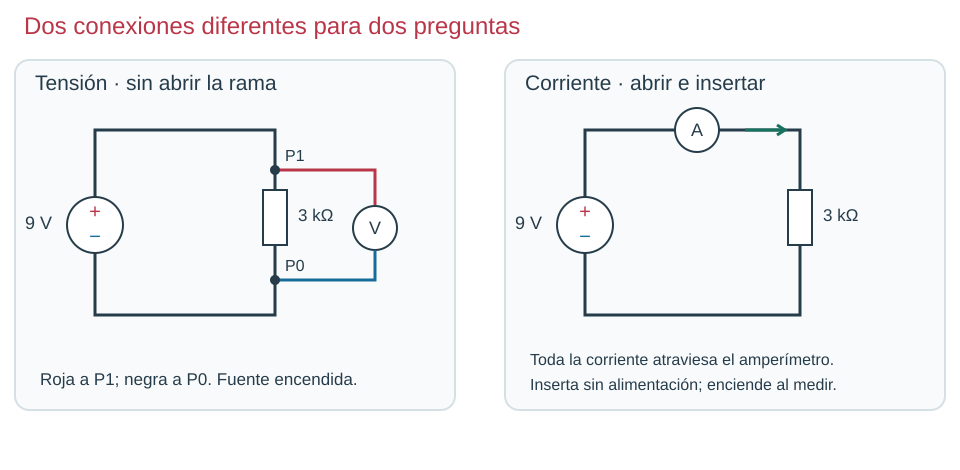
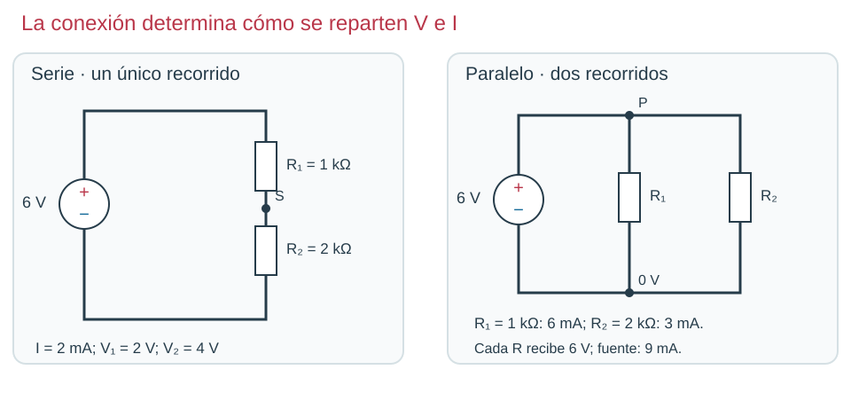
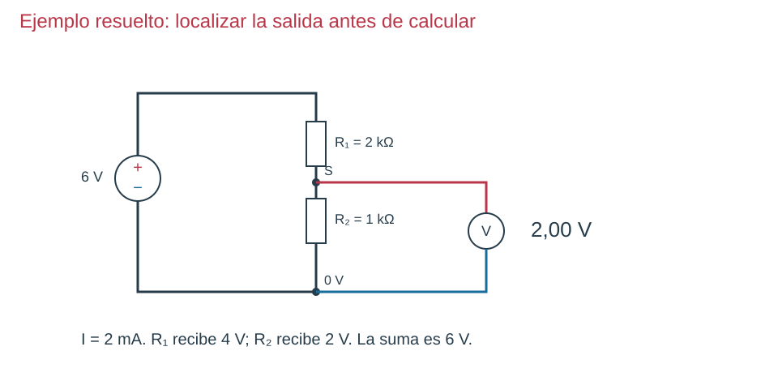
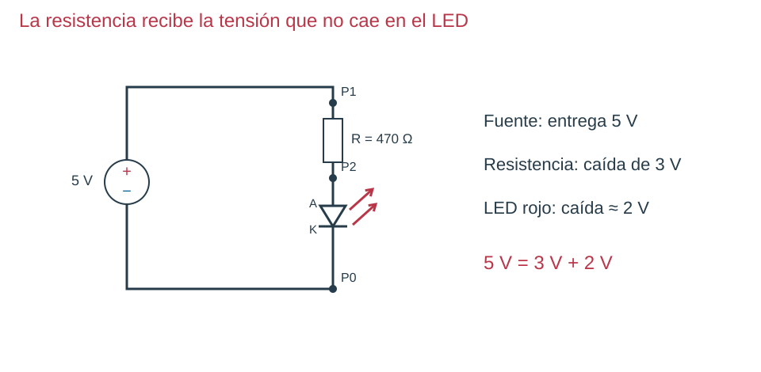
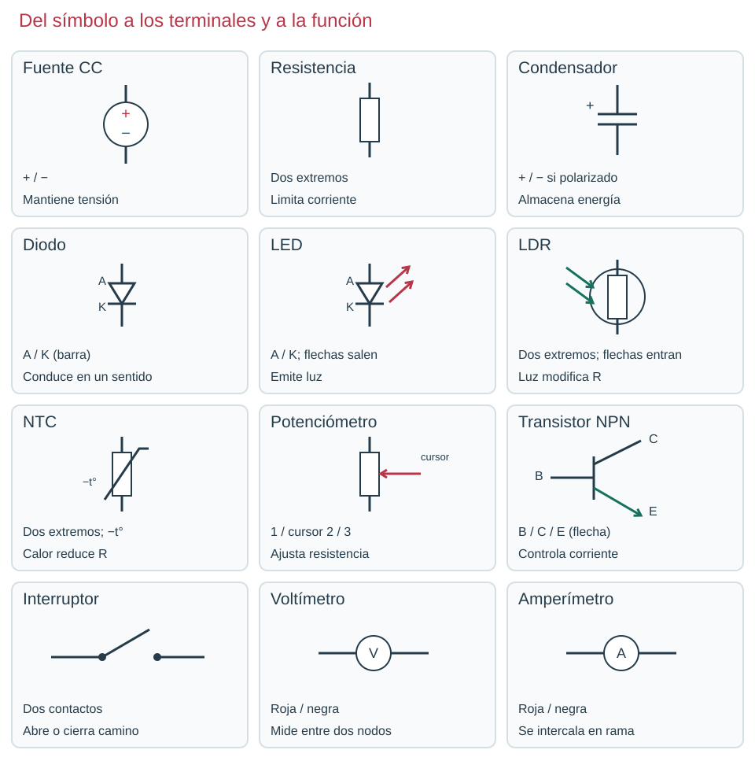

Contenido
Cómo resolver un problema
Sigue siempre este orden: esquema → datos → qué buscas → fórmula → unidades → cálculo → qué significa.
Cinco ejemplos resueltos

1 · Ley de Ohm. 9 V y 3 kΩ = 3000 Ω. I = 9 / 3000 = 0,003 A = 3 mA. El amperímetro (el multímetro en modo Amperaje) va en serie.

2 · Serie y paralelo. Serie: 3000 Ω, 2 mA, 2 V y 4 V. Paralelo: 1000 · 2000 / 3000 = 666,7 Ω, 9 mA en total (6 + 3); las dos a 6 V.

3 · Divisor. 6 · 1 / (2 + 1) = 2 V. R₁ se queda con 4 V; suman 6 V.

4 · LED. La resistencia recibe 5 − 2 = 3 V. I = 3 / 470 = 0,0064 A = 6,4 mA. Hacer 5 / 470 sería un error: olvida el LED.
5 · Condensador. 10 kΩ y 100 µF: τ = 10 000 · 0,0001 = 1 s. Al cabo de 1 s tiene el 63 % (3,16 V con 5 V); a los 5 s, casi todo.
Lo que tienes que saber
| Fórmula | Para qué |
|---|---|
| V = I · R | Tensión, intensidad y resistencia |
| R = R₁ + R₂ | Serie |
| R = R₁ · R₂ / (R₁ + R₂) | Paralelo de dos |
| VS = V · R₂ / (R₁ + R₂) | Divisor (R₂, la de abajo) |
| R = (V − VLED) / I | Resistencia de un LED |
| τ = R · C | Tiempo de carga (63 %); 5τ casi lleno |
Conversiones: 1 kΩ = 1000 Ω · 1 mA = 0,001 A · 1 µF = 0,000001 F.

Glosario de la unidad
Abrir el glosario
| Palabra | Qué significa |
|---|---|
| Actuador | Convierte la electricidad en luz, sonido o movimiento (LED, zumbador, motor, relé). |
| Amperímetro | Mide la intensidad. Va en serie. Es el multímetro en modo Amperaje. |
| Ánodo y cátodo | Patillas de un diodo: la corriente entra por el ánodo (A) y sale por el cátodo (K). |
| Capacidad | Cuánta electricidad guarda un condensador. Se mide en faradios (F); usamos µF. |
| Carga | Dos significados: llenar un condensador de electricidad, o lo que conectas a una salida y gasta corriente. |
| Condensador | Pieza que guarda electricidad durante un rato. |
| Constante de tiempo (τ) | τ = R · C, en segundos. En τ se carga hasta el 63 %; en 5τ, casi del todo. |
| Continuidad | Que dos puntos estén unidos por dentro. El polímetro pita. |
| Corriente alterna | El + y el − se intercambian una y otra vez (enchufes: 50 Hz). |
| Corriente continua | El + y el − no cambian (pila, fuente del taller). |
| Corte y saturación | Transistor apagado (corte) o dejando pasar toda la corriente, casi como un cable (saturación). |
| Cortocircuito | Camino casi sin resistencia entre + y −: pasa muchísima corriente. |
| Diodo | Deja pasar la corriente en un solo sentido. El LED es un diodo que da luz. |
| Divisor de tensión | Dos resistencias en serie; la salida S es la tensión que se queda en la de abajo. |
| Hercio (Hz) | Veces que se repite algo en un segundo. |
| Intensidad | Cantidad de electricidad que pasa cada segundo. Se mide en amperios (A) o mA. |
| LDR | Resistencia que baja con la luz. |
| Mili- (mA, mV, ms) | Milésima: 1 mA = 0,001 A; 1 mV = 0,001 V; 1 ms = 0,001 s. |
| Multímetro o polímetro | Aparato que mide tensión, intensidad y resistencia, según su modo o posición. |
| Nodo | Puntos unidos por cable o por la misma fila de la protoboard: tienen la misma tensión. |
| NTC | Resistencia que baja cuando sube la temperatura (la N es de «negativo»). |
| Osciloscopio | Dibuja cómo cambia una tensión con el tiempo. |
| Potenciómetro | Resistencia que se ajusta girando; el cursor es la patilla central. |
| Protoboard | Placa para montar sin soldar. Cada fila de cinco agujeros es un nodo; los raíles llevan + y −. |
| Resistencia | Lo que una pieza se opone al paso de la corriente. Se mide en ohmios (Ω). |
| Sensor | Nota un cambio de lo que le rodea (LDR, NTC). |
| Tensión | El «empuje» de la fuente; se mide entre dos puntos, en voltios (V). |
| Transistor | Una corriente pequeña por la base controla otra mayor entre colector y emisor. |
| Voltímetro | Mide la tensión. Va en paralelo. Es el multímetro en modo Voltaje. |
Errores frecuentes
| Error | Cómo evitarlo |
|---|---|
| Medir 0 V con las dos puntas en el mismo nodo | Roja en el punto que te interesa, negra en otro nodo |
| Poner el amperímetro tocando + y − | El amperímetro va siempre intercalado, en serie |
| Olvidar convertir kΩ, mA o µF | Escribe la conversión antes de calcular |
| Pensar que un divisor da lo mismo con algo conectado | Una carga en la salida baja la tensión |
| Decir que el LED luce porque «el transistor conduce» | Explica los dos caminos: mando por la base y carga por el colector |
| Dar una temperatura sin haberla medido | Escribe lo que mediste: resistencias y tensiones |
Ahora tú. Calcula: (a) salida de un divisor a 9 V con 2 kΩ arriba y 1 kΩ abajo; (b) resistencia de un LED a 6 V con 2 V y 8 mA; (c) τ con 22 kΩ y 100 µF.
Ver solución
(a) 9 · 1 / 3 = 3 V. (b) (6 − 2) / 0,008 = 500 Ω. (c) 22 000 · 0,0001 = 2,2 s.
Compruébalo
Relaciona cada fórmula con su uso.
Relaciona cada fórmula con su uso.
", "showMinimize": false, "itinerary": {"showClue": false, "clueGame": "", "percentageClue": 40, "showCodeAccess": false, "codeAccess": "", "messageCodeAccess": ""}, "cardsGame": [{"url": "", "x": 0, "y": 0, "author": "", "alt": "", "audio": "", "color": "#000000", "backcolor": "#ffffff", "eText": "V%20%3D%20I%20%C2%B7%20R", "urlBk": "", "xBk": 0, "yBk": 0, "authorBk": "", "altBk": "", "audioBk": "", "colorBk": "#000000", "backcolorBk": "#ffffff", "eTextBk": "Ley%20de%20Ohm"}, {"url": "", "x": 0, "y": 0, "author": "", "alt": "", "audio": "", "color": "#000000", "backcolor": "#ffffff", "eText": "R%20%3D%20R%E2%82%81%20%2B%20R%E2%82%82", "urlBk": "", "xBk": 0, "yBk": 0, "authorBk": "", "altBk": "", "audioBk": "", "colorBk": "#000000", "backcolorBk": "#ffffff", "eTextBk": "Resistencias%20en%20serie"}, {"url": "", "x": 0, "y": 0, "author": "", "alt": "", "audio": "", "color": "#000000", "backcolor": "#ffffff", "eText": "V%20%C2%B7%20R%E2%82%82%20%2F%20%28R%E2%82%81%20%2B%20R%E2%82%82%29", "urlBk": "", "xBk": 0, "yBk": 0, "authorBk": "", "altBk": "", "audioBk": "", "colorBk": "#000000", "backcolorBk": "#ffffff", "eTextBk": "Salida%20de%20un%20divisor"}, {"url": "", "x": 0, "y": 0, "author": "", "alt": "", "audio": "", "color": "#000000", "backcolor": "#ffffff", "eText": "%28V%20%E2%88%92%20V%20del%20LED%29%20%2F%20I", "urlBk": "", "xBk": 0, "yBk": 0, "authorBk": "", "altBk": "", "audioBk": "", "colorBk": "#000000", "backcolorBk": "#ffffff", "eTextBk": "Resistencia%20de%20un%20LED"}, {"url": "", "x": 0, "y": 0, "author": "", "alt": "", "audio": "", "color": "#000000", "backcolor": "#ffffff", "eText": "%CF%84%20%3D%20R%20%C2%B7%20C", "urlBk": "", "xBk": 0, "yBk": 0, "authorBk": "", "altBk": "", "audioBk": "", "colorBk": "#000000", "backcolorBk": "#ffffff", "eTextBk": "Tiempo%20de%20carga%20de%20un%20condensador"}], "isScorm": 0, "textButtonScorm": "Guardar la puntuación", "repeatActivity": true, "weighted": 100, "textAfter": "", "version": 2, "percentajeCards": 100, "type": 2, "showSolution": true, "timeShowSolution": 3, "time": 3, "evaluation": false, "evaluationID": "f96bc37c-5aaf-40e4-af65-a544218a46a6", "id": "idevice-1792164964449-1fa7ib51v", "msgs": {"msgSubmit": "Enviar", "msgClue": "¡Genial! La pista es:", "msgCodeAccess": "Código de acceso", "msgPlayStart": "Pulsa aquí para jugar", "msgScore": "Puntuación", "msgErrors": "Errores", "msgHits": "Aciertos", "msgMinimize": "Minimizar", "msgMaximize": "Maximizar", "msgFullScreen": "Pantalla Completa", "msgExitFullScreen": "Salir del modo pantalla completa", "msgNoImage": "Pregunta sin imágenes", "msgEndGameScore": "Comience la partida antes de guardar la puntuación.", "msgScoreScorm": "La puntuación no se puede guardar porque esta página no forma parte de un paquete SCORM.", "msgOnlySaveScore": "¡Solo puede guardar la puntuación una vez!", "msgOnlySave": "Solo puede guardar una vez", "msgInformation": "Información", "msgYouScore": "Su puntuación", "msgAuthor": "Autoría", "msgOnlySaveAuto": "Su puntuación se guardará después de cada pregunta. Solo puede jugar una vez.", "msgSaveAuto": "Su puntuación se guardará automáticamente después de cada pregunta.", "msgSeveralScore": "Puede guardar la puntuación tantas veces como quiera", "msgYouLastScore": "La última puntuación guardada es", "msgActityComply": "Ya ha realizado esta actividad.", "msgPlaySeveralTimes": "Puede realizar esta actividad cuantas veces quiera", "msgClose": "Cerrar", "msgAudio": "Audio", "msgNumQuestions": "Número de tarjetas", "msgTryAgain": "Necesitas al menos %s% de respuestas correctas para obtener la información. Inténtalo de nuevo.", "msgEndGameM": "Has completado el juego. Tu puntuación es %s.", "msgUncompletedActivity": "Actividad no completada", "msgSuccessfulActivity": "Actividad superada. Puntuación: %s", "msgUnsuccessfulActivity": "Actividad no superada. Puntuación: %s", "msgTypeGame": "Relaciona", "msgCheck": "Comprobar", "msgRestart": "Reiniciar"}}